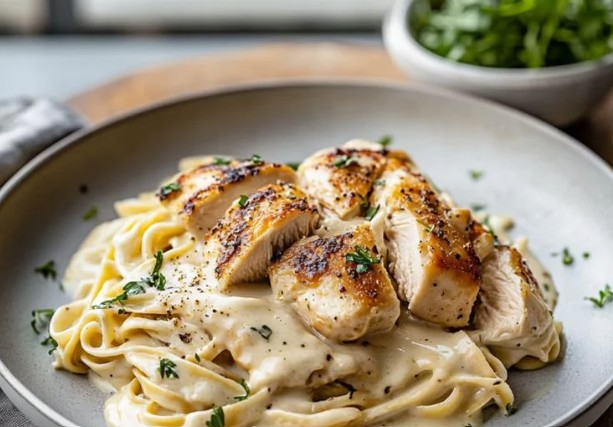

🍝 Pasta Alfredo con Pollo
Una receta cremosa y reconfortante para cualquier ocasión.
Un blog con mis recetas favoritas
Una receta cremosa y reconfortante para cualquier ocasión.
Fáciles, saludables y perfectas para el desayuno.
Postre cremoso con fresas frescas y sin necesidad de hornear.
Ingredientes: Pechuga de pollo, crema, mantequilla, queso parmesano, pasta fettuccine, sal, pimienta, ajo.
Ingredientes: Pan integral, aguacate, limón, sal, chile en hojuelas.
Ingredientes: Galletas, mantequilla, queso crema, azúcar, crema para batir, fresas frescas.